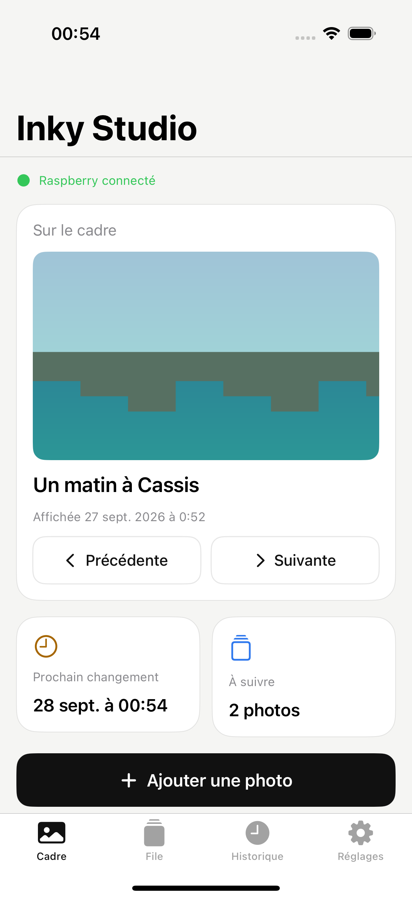
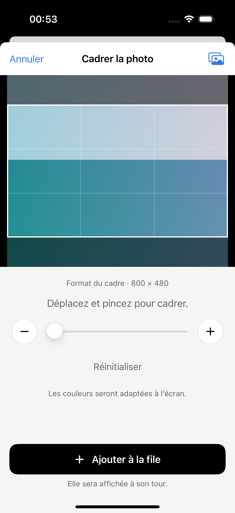
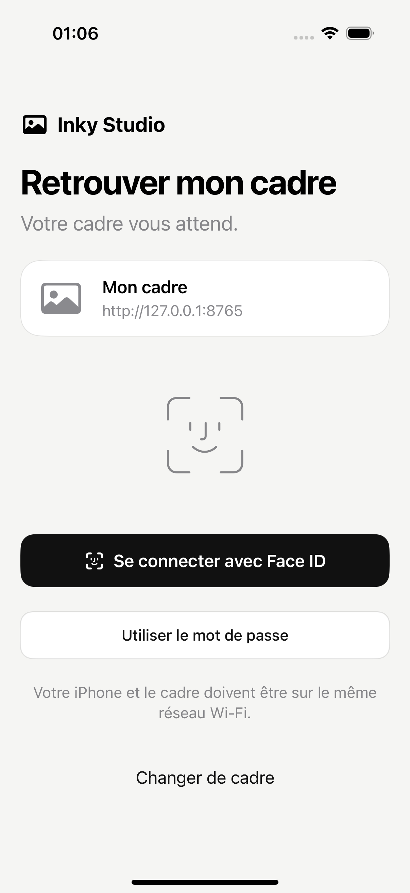

Choisir. Cadrer. Envoyer.
Retrouvez vos photos avec le sélecteur natif de l’iPhone. Déplacez, zoomez, puis ajoutez votre image à la file. HEIC, JPEG et PNG sont pris en charge.
Votre cadre, depuis l’iPhone
Choisissez un souvenir, ajustez le cadrage et retrouvez-le sur votre écran Inky. Une app simple pour piloter votre Raspberry, à la maison.

Retrouvez vos photos avec le sélecteur natif de l’iPhone. Déplacez, zoomez, puis ajoutez votre image à la file. HEIC, JPEG et PNG sont pris en charge.
Après la première connexion, activez Face ID pour retrouver votre cadre facilement. Le mot de passe reste disponible à tout moment.
Un changement quotidien, à intervalle régulier ou manuel. Réorganisez la file et retrouvez les photos déjà affichées dans l’historique.
L’iPhone parle directement au Raspberry sur votre réseau. Aucun compte cloud Inky Studio à créer, aucune publicité, aucun suivi publicitaire.
Comprendre les données utiliséesPensée pour l’iPhone
Une interface claire, quelques touches de couleur et des gestes familiers.
01 · Cadrage
Un aperçu au format du cadre, pour choisir ce que vous gardez.

02 · Connexion
Face ID en option, avec un accès par mot de passe.

Captures authentiques de la bêta. Les images, horaires et adresse affichés sont ceux de l’environnement de test.
Votre installation
Inky Studio accompagne un écran Inky Impression compatible, relié à un Raspberry qui exécute le serveur Inky Studio.
Voir le guide de démarrageInstallez le serveur Inky Studio et connectez l’écran. Le guide du projet décrit le matériel et l’installation.
L’iPhone et le Raspberry doivent pouvoir communiquer. Le Pi Zero 2 W utilise un réseau Wi-Fi 2,4 GHz.
Saisissez son adresse et son mot de passe dans l’app, puis choisissez votre première photo.
L’application iPhone est actuellement accessible sur invitation. Elle n’est pas encore distribuée publiquement sur l’App Store.